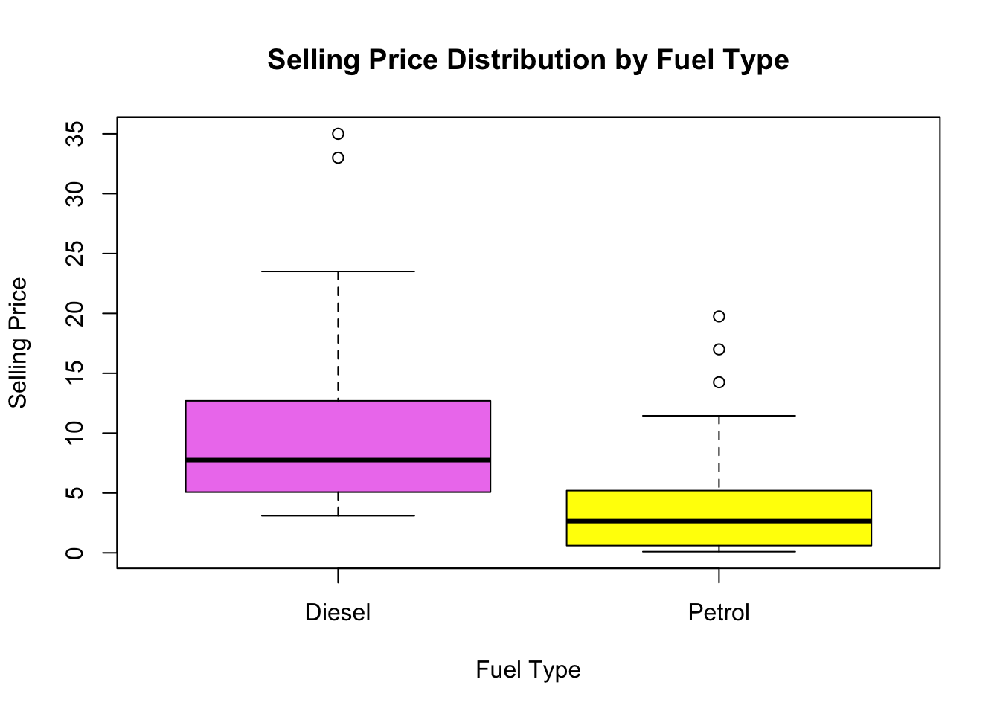
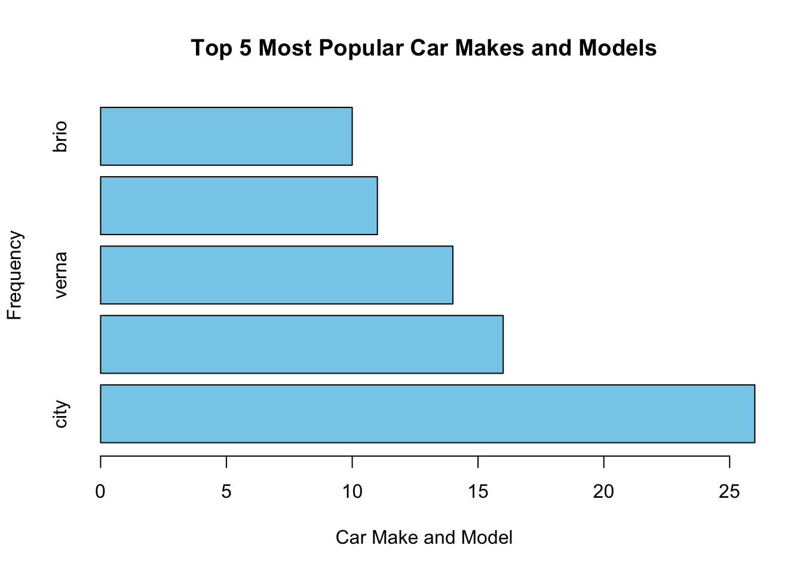
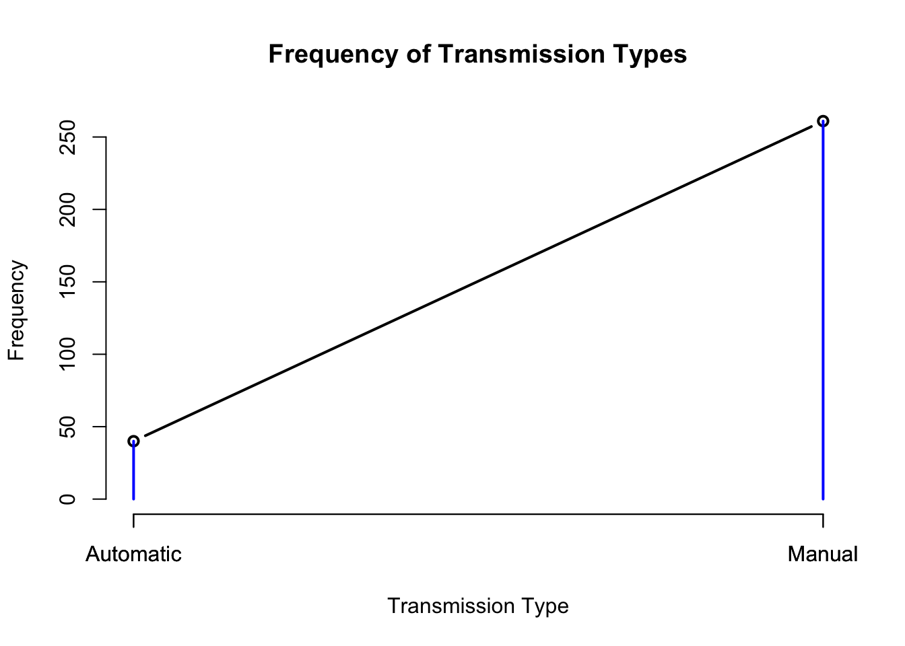
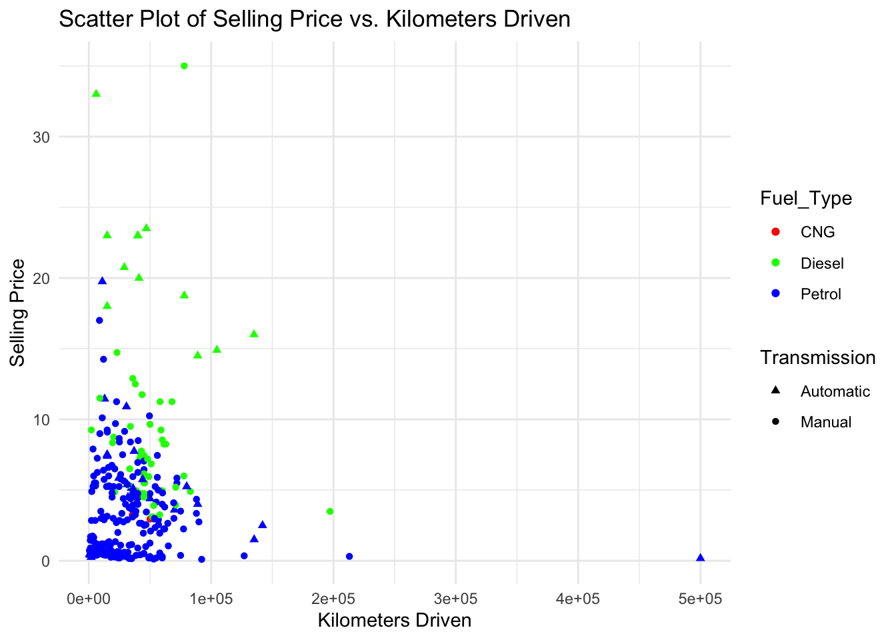
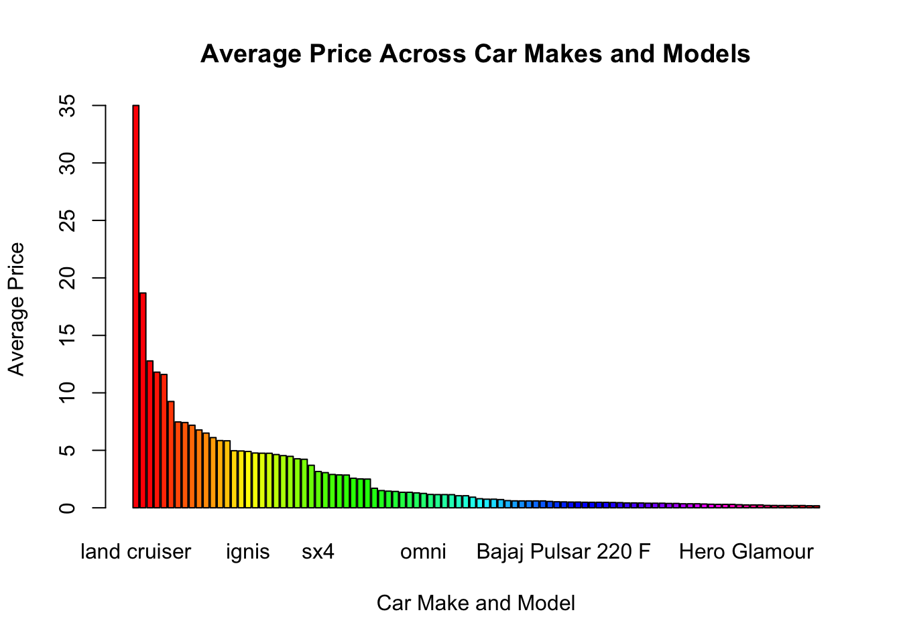
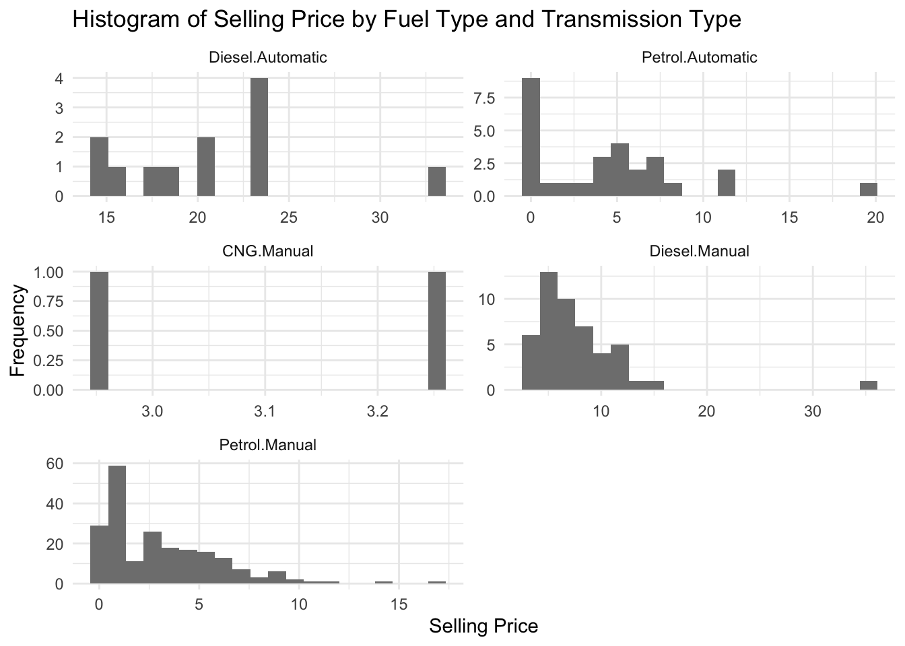

Code
library(tidyverse)
library(ggplot2)
knitr::opts_chunk$set(echo = TRUE, warning=FALSE, message=FALSE)Janani Natarajan
May 21, 2023
The dataset I have chosen provides a comprehensive collection of information on various cars, encompassing a wide range of attributes such as car name, year of manufacture, selling price, kilometers driven, fuel type, seller type, transmission, and previous owners. This dataset presents an opportunity to gain valuable insights into the dynamics of the automotive market and understand the factors that influence car prices.
By analyzing this dataset, we can investigate the relationship between car attributes and selling prices. For example, we can examine how factors like mileage, fuel type, and seller type impact the pricing of used cars. With data on both petrol and diesel cars, we can also explore any pricing disparities between the two fuel types.
Additionally, this dataset includes information on different transmission options, such as manual and automatic, enabling us to assess the influence of transmission type on car prices. We can examine whether certain transmission types are associated with higher or lower selling prices.
Ultimately, analyzing this dataset will provide us with a comprehensive understanding of the used car market, shedding light on pricing strategies, market preferences, and trends. The insights gained from this analysis can be invaluable for potential car buyers, sellers, and industry professionals, helping them make informed decisions based on market dynamics and pricing patterns.
In dataset, the “case” or unit of analysis refers to each individual car entry or record. Each row in the dataset represents a separate car with its specific attributes, such as car name, year, selling price, kilometers driven, fuel type, seller type, transmission, and previous owners. Therefore, each car entry serves as a distinct case or unit of analysis that can be examined and analyzed independently or in relation to other cars in the dataset.
In today’s automotive market, understanding the factors that influence car prices and market dynamics is crucial for both buyers and sellers. Pricing strategies, fuel efficiency, transmission options, and other attributes play a significant role in the decision-making process. With a vast array of car models and characteristics available, it becomes essential to analyze and identify patterns, trends, and preferences in the used car market. This dataset offers a unique opportunity to delve into the dynamics of the automotive market and gain valuable insights into pricing strategies, market preferences, and trends. By exploring the relationships between car attributes and selling prices, we can uncover valuable information that can aid buyers, sellers, and industry professionals in making informed decisions. Let’s dive into the dataset and discover the intriguing stories hidden within the data.
Source: kaggle.com (an online community for data science and machine learning)
Regarding the “cases” represented by the dataset, each row in the dataset represents a separate car entry or record. Each car entry contains specific attributes such as car name, year of manufacture, selling price, kilometers driven, fuel type, seller type, transmission, and previous owners. Therefore, each row in the dataset represents a distinct car with its associated characteristics, serving as a unit of analysis for the purposes of this analysis.
Why I choose vehicles as my data set
The choice of the “cars” dataset as a data set is likely based on several factors. Firstly, cars are a ubiquitous mode of transportation and play a significant role in our daily lives. The dataset provides an opportunity to explore various aspects of the automotive industry, including car makes, models, attributes, and market trends. Additionally, analyzing car data can be relevant for multiple stakeholders, such as car manufacturers, dealerships, buyers, and policymakers. It allows for studying factors like car popularity, performance metrics, fuel efficiency, pricing, and more. The dataset’s comprehensive information and its relevance to real-world scenarios make it an attractive choice for conducting analyses and gaining insights into the automotive domain.
Car_Name: This column contains the name or model of each car. It provides a unique identifier for each vehicle in the dataset, allowing easy reference and identification.
Year: The Year column represents the manufacturing year of each car. It indicates the age or vintage of the vehicle, which is an important factor to consider when evaluating its value and condition.
Selling_price: This column contains the listed selling price of each car. It represents the monetary value at which the owner or seller is offering the vehicle for sale. The selling price can vary depending on factors such as brand reputation, model popularity, condition, mileage, and market demand.
Kms_driven: The Kilometers Driven column records the total distance traveled by each car in kilometers. It provides an insight into the usage and wear-and-tear of the vehicle. Generally, higher mileage suggests that the car has been driven more extensively, potentially impacting its value and condition.
Fuel_type: This column specifies the type of fuel used by each car, such as petrol, diesel, or electric. It reflects the energy source that powers the vehicle’s engine. Fuel type is an important consideration for buyers, as it affects running costs, environmental impact, and availability of refueling options.
Seller_type: The Seller Type column indicates whether the seller is a dealer or an individual. It helps differentiate between professional car dealerships and private individuals selling their cars. Seller type can influence factors such as negotiation flexibility, warranty options, and overall trustworthiness of the transaction.
Transmission: This column represents the type of transmission system present in each car. It can be either manual or automatic. Manual transmission requires manual shifting of gears, while automatic transmission shifts gears automatically. Transmission type can impact driving experience, convenience, and preferences of potential buyers.
Owner: The Owner column denotes the number of previous owners a car has had. It provides insight into the vehicle’s history and ownership stability. Generally, a car with fewer previous owners may be perceived as more desirable and potentially better maintained, which can affect its value.
How many cars in the dataset are fuel-efficient or hybrid?
Variable: Fuel_Type
Analysis: Calculate the count or percentage of cars with fuel types labeled as “Hybrid” or “Electric” to determine the number of fuel-efficient or hybrid cars in the dataset.
What are the most popular car makes and models in the dataset?
Variables: Car_Name
Analysis: Calculate the frequency or count of each unique car make and model to identify the most popular car makes and models in the dataset. Visualization methods like bar graphs or pie charts can be used to present the results.
What is the most common transmission type among the cars?
Variable: Transmission
Analysis: Calculate the frequency or count of each unique transmission type to determine the most common transmission type among the cars. Visualization methods like bar graphs can effectively display this information.
How does the average price vary across different car makes and models?
Variables: Car_Name, Selling_Price
Analysis: Calculate the average selling price for each unique car make and model to understand how the prices vary across different car makes and models. Visualization methods like bar graphs or box plots can be used to compare the average prices.
What is the average mileage (kilometers driven) of the cars in the dataset?
Variable: Kms_Driven
Analysis: Calculate the average value of the “Kms_Driven” variable to determine the average mileage of the cars in the dataset. Visualization methods like histogram or box plots can be used to visualize the distribution of mileage.
I will be plotting different histograms, box plots, scatter plots and linear graphs. The chosen visualization methods selected based on the nature of the questions and the types of variables involved. These visualizations help in summarizing and presenting the data in a clear and meaningful way, allowing for easy comparison, identification of patterns, and inference of insights related to the questions posed.
Read the data
The dataset has 301 rows and 9 columns. This means it contains information for 301 observations or instances, with 9 different variables or attributes recorded for each observation.
Car_Name Year Selling_Price Present_Price
Length:301 Min. :2003 Min. : 0.100 Min. : 0.320
Class :character 1st Qu.:2012 1st Qu.: 0.900 1st Qu.: 1.200
Mode :character Median :2014 Median : 3.600 Median : 6.400
Mean :2014 Mean : 4.661 Mean : 7.628
3rd Qu.:2016 3rd Qu.: 6.000 3rd Qu.: 9.900
Max. :2018 Max. :35.000 Max. :92.600
Kms_Driven Fuel_Type Seller_Type Transmission
Min. : 500 Length:301 Length:301 Length:301
1st Qu.: 15000 Class :character Class :character Class :character
Median : 32000 Mode :character Mode :character Mode :character
Mean : 36947
3rd Qu.: 48767
Max. :500000
Owner
Min. :0.00000
1st Qu.:0.00000
Median :0.00000
Mean :0.04319
3rd Qu.:0.00000
Max. :3.00000 Car_Name Year Selling_Price Present_Price Kms_Driven Fuel_Type
1 ritz 2014 3.35 5.59 27000 Petrol
2 sx4 2013 4.75 9.54 43000 Diesel
3 ciaz 2017 7.25 9.85 6900 Petrol
4 wagon r 2011 2.85 4.15 5200 Petrol
5 swift 2014 4.60 6.87 42450 Diesel
6 vitara brezza 2018 9.25 9.83 2071 Diesel
Seller_Type Transmission Owner
1 Dealer Manual 0
2 Dealer Manual 0
3 Dealer Manual 0
4 Dealer Manual 0
5 Dealer Manual 0
6 Dealer Manual 0Displays the first few rows of the dataset. This shows the values of each variable for the first six cars in the dataset. Each row represents a car entry, and each column represents a specific attribute of the car, such as its name (Car_Name), year of manufacture (Year), selling price (Selling_Price), present price (Present_Price), kilometers driven (Kms_Driven), and fuel type (Fuel_Type).
Car_Name Year Selling_Price Present_Price Kms_Driven Fuel_Type Seller_Type
296 city 2015 8.55 13.09 60076 Diesel Dealer
297 city 2016 9.50 11.60 33988 Diesel Dealer
298 brio 2015 4.00 5.90 60000 Petrol Dealer
299 city 2009 3.35 11.00 87934 Petrol Dealer
300 city 2017 11.50 12.50 9000 Diesel Dealer
301 brio 2016 5.30 5.90 5464 Petrol Dealer
Transmission Owner
296 Manual 0
297 Manual 0
298 Manual 0
299 Manual 0
300 Manual 0
301 Manual 0Displays the last few rows of the dataset.
The above command checks whether each element in the Fuel_Type column of the dataset matches either “Petrol” or “Diesel” using the %in% operator. The resulting logical vector is then summed using the sum() function to get the count of TRUE values, indicating the number of fuel-efficient or hybrid cars in the dataset.
#Count the frequency of each car make and model
car_counts <- table(data$Car_Name)
# Sort the car counts in descending order
sorted_car_counts <- sort(car_counts, decreasing = TRUE)
# Get the top 5 most popular car makes and models
top_car_counts <- head(sorted_car_counts, 5)
# Print the results
top_car_counts
city corolla altis verna fortuner brio
26 16 14 11 10 [1] "Manual"The most common transmission type among the cars in the dataset is “Manual”.
# Aggregate the selling price based on fuel type and transmission type
price_summary <- aggregate(data$Selling_Price, by = list(data$Fuel_Type, data$Transmission), FUN = mean)
# Rename the columns in the summary
colnames(price_summary) <- c("Fuel_Type", "Transmission", "Average_Selling_Price")
# Print the summary
print(price_summary) Fuel_Type Transmission Average_Selling_Price
1 Diesel Automatic 20.699167
2 Petrol Automatic 4.586071
3 CNG Manual 3.100000
4 Diesel Manual 7.673333
5 Petrol Manual 3.088768In the above code, data$Selling_Price represents the selling price column in your dataset, and data$Fuel_Type and data$Transmission represent the fuel type and transmission type columns, respectively. The aggregate() function calculates the mean selling price for each combination of fuel type and transmission type. The resulting summary table price_summary contains three columns: Fuel_Type, Transmission, and Average_Selling_Price. This table provides insights into the differences in selling prices based on the fuel type and transmission type of the cars in your dataset.
# Create a subset of data for fuel-efficient and hybrid cars
fuel_efficient_cars <- subset(data, Fuel_Type %in% c("Petrol", "Diesel"))
# Set up colors for the box plot
colors <- c("violet", "yellow")
# Create the box plot
boxplot(Selling_Price ~ Fuel_Type, data = fuel_efficient_cars, col = colors,
xlab = "Fuel Type", ylab = "Selling Price", main = "Selling Price Distribution by Fuel Type")
we first create a subset of data called fuel_efficient_cars by selecting rows where the Fuel_Type is either “Petrol” or “Diesel”. We then define a vector of colors (colors) to assign different colors to the box plots. Finally, we use the boxplot() function to create the box plot, specifying the Selling_Price as the dependent variable, Fuel_Type as the grouping variable, and using the col parameter to set the colors. The xlab, ylab, and main parameters are used to label the axes and provide a title for the plot.
What are the most popular car makes and models in the dataset?

The plot will have a title “Top 5 Most Popular Car Makes and Models” and will display the car make and model names on the y-axis, frequency counts on the x-axis. From the above graph, City is the most frequent model which is made.
What is the most common transmission type among the cars?
transmission_counts <- table(data$Transmission)
transmission_names <- names(transmission_counts)
# Create a line plot with points
plot(transmission_counts, type = "b", xlab = "Transmission Type", ylab = "Frequency", main = "Frequency of Transmission Types")
points(transmission_counts, col = "blue")
# Add labels to the x-axis
axis(1, at = 1:length(transmission_names), labels = transmission_names)
The above is a line graph with points representing the frequency of each transmission type. The x-axis will display the transmission types, and the y-axis will show the frequency. Based on the depicted graph, there is a significant transition in the frequency of transmission types from automatic to manual, ranging from approximately 50 to 250.
# Create a bivariate scatter plot
scatter_plot <- ggplot(data = data, aes(x = Kms_Driven, y = Selling_Price, color = Fuel_Type, shape = Transmission)) +
geom_point() +
labs(x = "Kilometers Driven", y = "Selling Price", title = "Scatter Plot of Selling Price vs. Kilometers Driven") +
scale_color_manual(values = c("Petrol" = "blue", "Diesel" = "green", "CNG" = "red")) +
scale_shape_manual(values = c("Manual" = 16, "Automatic" = 17)) +
theme_minimal()
# Display the scatter plot
print(scatter_plot)
This scatter plot represents the relationship between the selling price and kilometers driven for different cars in the dataset. The x-axis represents the kilometers driven, the y-axis represents the selling price, and the points are colored based on the fuel type of the cars. Additionally, the shape of the points differentiates between manual and automatic transmission types. This bivariate plot allows for visualizing the distribution and relationship between selling price and kilometers driven while considering the fuel type and transmission type of the cars.
How does the average price vary across different car makes and models?
# Calculate the average price for each car make and model
avg_price <- aggregate(data$Selling_Price, by = list(data$Car_Name), FUN = mean)
# Sort the average prices in descending order
sorted_avg_price <- avg_price[order(avg_price$x, decreasing = TRUE), ]
# Create a bar graph with rainbow colors
barplot(sorted_avg_price$x, names.arg = sorted_avg_price$Group.1,
main = "Average Price Across Car Makes and Models", xlab = "Car Make and Model",
ylab = "Average Price", col = rainbow(length(sorted_avg_price$x)))
The above graph is a bar graph that represents the average price across different car makes and models. Each bar in the graph corresponds to a specific car make and model, and its height represents the average price of that particular car. The x-axis represents the car make and model, while the y-axis represents the average price
The title of the graph is “Average Price Across Car Makes and Models,” indicating the main purpose of the visualization. The x-axis is labeled as “Car Make and Model,” and the y-axis is labeled as “Average Price,” providing clear information about the variables being represented.
Overall, this bar graph provides a visual representation of how the average price varies across different car makes and models, allowing for easy comparison and identification of car models with higher or lower average prices.
# Subset the data for each combination of fuel type and transmission type
petrol_manual <- data$Selling_Price[data$Fuel_Type == "Petrol" & data$Transmission == "Manual"]
petrol_auto <- data$Selling_Price[data$Fuel_Type == "Petrol" & data$Transmission == "Automatic"]
diesel_manual <- data$Selling_Price[data$Fuel_Type == "Diesel" & data$Transmission == "Manual"]
diesel_auto <- data$Selling_Price[data$Fuel_Type == "Diesel" & data$Transmission == "Automatic"]
# Create a list of selling price vectors for each combination
selling_price_list <- list("Petrol - Manual" = petrol_manual,
"Petrol - Automatic" = petrol_auto,
"Diesel - Manual" = diesel_manual,
"Diesel - Automatic" = diesel_auto)
# Create a vector of colors for each combination
fill_colors <- c("Petrol - Manual" = "skyblue",
"Petrol - Automatic" = "lightgreen",
"Diesel - Manual" = "pink",
"Diesel - Automatic" = "lightyellow")
# Create a histogram plot
hist_plot <- ggplot(data = data) +
geom_histogram(aes(x = Selling_Price, fill = interaction(Fuel_Type, Transmission)),
bins = 20, position = "identity") +
labs(x = "Selling Price", y = "Frequency",
title = "Histogram of Selling Price by Fuel Type and Transmission Type") +
scale_fill_manual(values = fill_colors) +
facet_wrap(~interaction(Fuel_Type, Transmission), ncol = 2, scales = "free") +
theme_minimal()
# Display the histogram plot
print(hist_plot)
The code generates a histogram plot to visualize the differences in selling prices based on the fuel type and transmission type of cars in the dataset.
In this visualization, we use a bar plot to represent multiple dimensions. The x-axis represents the “Fuel_Type,” and the bars are filled with different colors to represent the “Transmission” types. The color of the bars is further differentiated based on the “Seller_Type.” We also utilize the “facet_wrap” function to create separate panels for each “Owner,” allowing us to visualize the distribution of the dimensions across different owner types. This visualization helps in understanding the distribution and relationships among the different dimensions in your dataset.
Firstly, when examining the dataset, it is evident that certain car makes and models stand out as the most popular choices among buyers. The top car makes include City, Corolla Altis, Verna, Fortuner, and Brio, indicating their widespread popularity and demand in the market.
Furthermore, the dataset provides insights into the fuel efficiency of the cars. The majority of cars are powered by Petrol and Diesel fuels, suggesting that these fuel types are prevalent among the vehicles included in the dataset.
Another crucial aspect to consider is the transmission type of the cars. The analysis reveals that the most common transmission type among the cars is Manual. This finding indicates a preference for manual transmissions among the car owners.
The visualizations employed, such as box plots, scatter plots, and bar graphs, have proven instrumental in understanding the variation in car prices across different makes and models. These visual representations allow for a comprehensive comparison of average selling prices, highlighting the range and distribution of prices within the dataset.
Finally, by examining the relationships between engine size, horsepower, and fuel efficiency, it is possible to identify any potential correlations. This analysis can shed light on how these variables interrelate and provide insights into factors influencing fuel efficiency.
Overall, through the combination of data analysis and visualizations, valuable insights can be obtained regarding the most popular car makes and models, fuel efficiency trends, transmission preferences, price variations, and potential correlations. These findings contribute to a deeper understanding of the dataset and can inform decision-making processes in the automotive industry.
Predictive Modeling: Develop models to predict car prices or mileage based on attributes using machine learning algorithms.
Market Trends: Analyze how car prices, fuel efficiency, and popular models have evolved over time.
Geographical Analysis: Investigate regional variations in car prices and market demand.
Sentiment Analysis: Perform sentiment analysis on customer reviews to understand satisfaction and perception.
Price Factors: Explore specific factors like mileage, age, and engine size that influence car prices.
In summary, future work includes predictive modeling, analyzing market trends, conducting geographical and sentiment analysis, and investigating price factors to enhance understanding and provide insights for stakeholders in the automotive industry.
R programming
kaggle
---
title: "Final Project"
author: "Janani Natarajan"
date: "05/21/2023"
format:
html:
toc: true
code-fold: true
code-copy: true
code-tools: true
---
```{r}
#| label: setup
#| warning: false
#| message: false
library(tidyverse)
library(ggplot2)
knitr::opts_chunk$set(echo = TRUE, warning=FALSE, message=FALSE)
```
## **1.** Introduction
The dataset I have chosen provides a comprehensive collection of information on various cars, encompassing a wide range of attributes such as car name, year of manufacture, selling price, kilometers driven, fuel type, seller type, transmission, and previous owners. This dataset presents an opportunity to gain valuable insights into the dynamics of the automotive market and understand the factors that influence car prices.
By analyzing this dataset, we can investigate the relationship between car attributes and selling prices. For example, we can examine how factors like mileage, fuel type, and seller type impact the pricing of used cars. With data on both petrol and diesel cars, we can also explore any pricing disparities between the two fuel types.
Additionally, this dataset includes information on different transmission options, such as manual and automatic, enabling us to assess the influence of transmission type on car prices. We can examine whether certain transmission types are associated with higher or lower selling prices.
Ultimately, analyzing this dataset will provide us with a comprehensive understanding of the used car market, shedding light on pricing strategies, market preferences, and trends. The insights gained from this analysis can be invaluable for potential car buyers, sellers, and industry professionals, helping them make informed decisions based on market dynamics and pricing patterns.
**In dataset, the "case" or unit of analysis** refers to each individual car entry or record. Each row in the dataset represents a separate car with its specific attributes, such as car name, year, selling price, kilometers driven, fuel type, seller type, transmission, and previous owners. Therefore, each car entry serves as a distinct case or unit of analysis that can be examined and analyzed independently or in relation to other cars in the dataset.
## 2. **Background of the Topic/Literature Review**
In today's automotive market, understanding the factors that influence car prices and market dynamics is crucial for both buyers and sellers. Pricing strategies, fuel efficiency, transmission options, and other attributes play a significant role in the decision-making process. With a vast array of car models and characteristics available, it becomes essential to analyze and identify patterns, trends, and preferences in the used car market. This dataset offers a unique opportunity to delve into the dynamics of the automotive market and gain valuable insights into pricing strategies, market preferences, and trends. By exploring the relationships between car attributes and selling prices, we can uncover valuable information that can aid buyers, sellers, and industry professionals in making informed decisions. Let's dive into the dataset and discover the intriguing stories hidden within the data.
## 3. **Dataset Introduction**
**Source**: kaggle.com (an online community for data science and machine learning)
Regarding the "cases" represented by the dataset, each row in the dataset represents a separate car entry or record. Each car entry contains specific attributes such as car name, year of manufacture, selling price, kilometers driven, fuel type, seller type, transmission, and previous owners. Therefore, each row in the dataset represents a distinct car with its associated characteristics, serving as a unit of analysis for the purposes of this analysis.
**Why I choose vehicles as my data set**
The choice of the "cars" dataset as a data set is likely based on several factors. Firstly, cars are a ubiquitous mode of transportation and play a significant role in our daily lives. The dataset provides an opportunity to explore various aspects of the automotive industry, including car makes, models, attributes, and market trends. Additionally, analyzing car data can be relevant for multiple stakeholders, such as car manufacturers, dealerships, buyers, and policymakers. It allows for studying factors like car popularity, performance metrics, fuel efficiency, pricing, and more. The dataset's comprehensive information and its relevance to real-world scenarios make it an attractive choice for conducting analyses and gaining insights into the automotive domain.
## 4. Data Description
- **Car_Name**: This column contains the name or model of each car. It provides a unique identifier for each vehicle in the dataset, allowing easy reference and identification.
- **Year**: The Year column represents the manufacturing year of each car. It indicates the age or vintage of the vehicle, which is an important factor to consider when evaluating its value and condition.
- **Selling_price**: This column contains the listed selling price of each car. It represents the monetary value at which the owner or seller is offering the vehicle for sale. The selling price can vary depending on factors such as brand reputation, model popularity, condition, mileage, and market demand.
- **Kms_driven**: The Kilometers Driven column records the total distance traveled by each car in kilometers. It provides an insight into the usage and wear-and-tear of the vehicle. Generally, higher mileage suggests that the car has been driven more extensively, potentially impacting its value and condition.
- **Fuel_type**: This column specifies the type of fuel used by each car, such as petrol, diesel, or electric. It reflects the energy source that powers the vehicle's engine. Fuel type is an important consideration for buyers, as it affects running costs, environmental impact, and availability of refueling options.
- **Seller_type**: The Seller Type column indicates whether the seller is a dealer or an individual. It helps differentiate between professional car dealerships and private individuals selling their cars. Seller type can influence factors such as negotiation flexibility, warranty options, and overall trustworthiness of the transaction.
- **Transmission**: This column represents the type of transmission system present in each car. It can be either manual or automatic. Manual transmission requires manual shifting of gears, while automatic transmission shifts gears automatically. Transmission type can impact driving experience, convenience, and preferences of potential buyers.
- **Owner**: The Owner column denotes the number of previous owners a car has had. It provides insight into the vehicle's history and ownership stability. Generally, a car with fewer previous owners may be perceived as more desirable and potentially better maintained, which can affect its value.
## 5. Analysis Plan
- How many cars in the dataset are fuel-efficient or hybrid?
- Variable: Fuel_Type
- Analysis: Calculate the count or percentage of cars with fuel types labeled as "Hybrid" or "Electric" to determine the number of fuel-efficient or hybrid cars in the dataset.
<!-- -->
- What are the most popular car makes and models in the dataset?
- Variables: Car_Name
- Analysis: Calculate the frequency or count of each unique car make and model to identify the most popular car makes and models in the dataset. Visualization methods like bar graphs or pie charts can be used to present the results.
- What is the most common transmission type among the cars?
- Variable: Transmission
- Analysis: Calculate the frequency or count of each unique transmission type to determine the most common transmission type among the cars. Visualization methods like bar graphs can effectively display this information.
- How does the average price vary across different car makes and models?
- Variables: Car_Name, Selling_Price
- Analysis: Calculate the average selling price for each unique car make and model to understand how the prices vary across different car makes and models. Visualization methods like bar graphs or box plots can be used to compare the average prices.
- What is the average mileage (kilometers driven) of the cars in the dataset?
- Variable: Kms_Driven
- Analysis: Calculate the average value of the "Kms_Driven" variable to determine the average mileage of the cars in the dataset. Visualization methods like histogram or box plots can be used to visualize the distribution of mileage.
- I will be plotting different histograms, box plots, scatter plots and linear graphs. The chosen visualization methods selected based on the nature of the questions and the types of variables involved. These visualizations help in summarizing and presenting the data in a clear and meaningful way, allowing for easy comparison, identification of patterns, and inference of insights related to the questions posed.
## 6. **Descriptive Statistics:**
Read the data
```{r}
data<-read.csv(file = "/Users/jananinatarajan/Downloads/cardata.csv",
header=TRUE,
sep = ","
)
```
```{r}
dim(data)
```
The dataset has 301 rows and 9 columns. This means it contains information for 301 observations or instances, with 9 different variables or attributes recorded for each observation.
```{r}
summary(data)
```
```{r}
head(data)
```
Displays the first few rows of the dataset. This shows the values of each variable for the first six cars in the dataset. Each row represents a car entry, and each column represents a specific attribute of the car, such as its name (**`Car_Name`**), year of manufacture (**`Year`**), selling price (**`Selling_Price`**), present price (**`Present_Price`**), kilometers driven (**`Kms_Driven`**), and fuel type (**`Fuel_Type`**).
```{r}
tail(data)
```
Displays the last few rows of the dataset.
```{r}
sum(data$Fuel_Type %in% c("Petrol", "Diesel"))
```
The above command checks whether each element in the **`Fuel_Type`** column of the dataset matches either "Petrol" or "Diesel" using the **`%in%`** operator. The resulting logical vector is then summed using the **`sum()`** function to get the count of **`TRUE`** values, indicating the number of fuel-efficient or hybrid cars in the dataset.
```{r}
#Count the frequency of each car make and model
car_counts <- table(data$Car_Name)
# Sort the car counts in descending order
sorted_car_counts <- sort(car_counts, decreasing = TRUE)
# Get the top 5 most popular car makes and models
top_car_counts <- head(sorted_car_counts, 5)
# Print the results
top_car_counts
```
```{r}
# Count the frequency of each transmission type
transmission_counts <- table(data$Transmission)
# Find the most common transmission type
most_common_transmission <- names(transmission_counts)[which.max(transmission_counts)]
# Print the result
most_common_transmission
```
The most common transmission type among the cars in the dataset is "Manual".
```{r}
# Aggregate the selling price based on fuel type and transmission type
price_summary <- aggregate(data$Selling_Price, by = list(data$Fuel_Type, data$Transmission), FUN = mean)
# Rename the columns in the summary
colnames(price_summary) <- c("Fuel_Type", "Transmission", "Average_Selling_Price")
# Print the summary
print(price_summary)
```
In the above code, **`data$Selling_Price`** represents the selling price column in your dataset, and **`data$Fuel_Type`** and **`data$Transmission`** represent the fuel type and transmission type columns, respectively. The **`aggregate()`** function calculates the mean selling price for each combination of fuel type and transmission type. The resulting summary table **`price_summary`** contains three columns: Fuel_Type, Transmission, and Average_Selling_Price. This table provides insights into the differences in selling prices based on the fuel type and transmission type of the cars in your dataset.
## 7. **Results: Analysis and Visualization**
1. **How many cars in the dataset are fuel-efficient or hybrid?**
```{r}
# Create a subset of data for fuel-efficient and hybrid cars
fuel_efficient_cars <- subset(data, Fuel_Type %in% c("Petrol", "Diesel"))
# Set up colors for the box plot
colors <- c("violet", "yellow")
# Create the box plot
boxplot(Selling_Price ~ Fuel_Type, data = fuel_efficient_cars, col = colors,
xlab = "Fuel Type", ylab = "Selling Price", main = "Selling Price Distribution by Fuel Type")
```
we first create a subset of data called **`fuel_efficient_cars`** by selecting rows where the **`Fuel_Type`** is either "Petrol" or "Diesel". We then define a vector of colors (**`colors`**) to assign different colors to the box plots. Finally, we use the **`boxplot()`** function to create the box plot, specifying the **`Selling_Price`** as the dependent variable, **`Fuel_Type`** as the grouping variable, and using the **`col`** parameter to set the colors. The **`xlab`**, **`ylab`**, and **`main`** parameters are used to label the axes and provide a title for the plot.
2. **What are the most popular car makes and models in the dataset?**
```{r}
# Create a bar plot for the top 5 car makes and models
barplot(top_car_counts, main = "Top 5 Most Popular Car Makes and Models", xlab = "Car Make and Model", ylab = "Frequency", col = "skyblue", horiz = TRUE)
```
The plot will have a title "Top 5 Most Popular Car Makes and Models" and will display the car make and model names on the y-axis, frequency counts on the x-axis. From the above graph, City is the most frequent model which is made.
3. **What is the most common transmission type among the cars?**
```{r}
transmission_counts <- table(data$Transmission)
transmission_names <- names(transmission_counts)
# Create a line plot with points
plot(transmission_counts, type = "b", xlab = "Transmission Type", ylab = "Frequency", main = "Frequency of Transmission Types")
points(transmission_counts, col = "blue")
# Add labels to the x-axis
axis(1, at = 1:length(transmission_names), labels = transmission_names)
```
The above is a line graph with points representing the frequency of each transmission type. The x-axis will display the transmission types, and the y-axis will show the frequency. Based on the depicted graph, there is a significant transition in the frequency of transmission types from automatic to manual, ranging from approximately 50 to 250.
```{r}
# Create a bivariate scatter plot
scatter_plot <- ggplot(data = data, aes(x = Kms_Driven, y = Selling_Price, color = Fuel_Type, shape = Transmission)) +
geom_point() +
labs(x = "Kilometers Driven", y = "Selling Price", title = "Scatter Plot of Selling Price vs. Kilometers Driven") +
scale_color_manual(values = c("Petrol" = "blue", "Diesel" = "green", "CNG" = "red")) +
scale_shape_manual(values = c("Manual" = 16, "Automatic" = 17)) +
theme_minimal()
# Display the scatter plot
print(scatter_plot)
```
This scatter plot represents the relationship between the selling price and kilometers driven for different cars in the dataset. The x-axis represents the kilometers driven, the y-axis represents the selling price, and the points are colored based on the fuel type of the cars. Additionally, the shape of the points differentiates between manual and automatic transmission types. This bivariate plot allows for visualizing the distribution and relationship between selling price and kilometers driven while considering the fuel type and transmission type of the cars.
4. **How does the average price vary across different car makes and models?**
```{r}
# Calculate the average price for each car make and model
avg_price <- aggregate(data$Selling_Price, by = list(data$Car_Name), FUN = mean)
# Sort the average prices in descending order
sorted_avg_price <- avg_price[order(avg_price$x, decreasing = TRUE), ]
# Create a bar graph with rainbow colors
barplot(sorted_avg_price$x, names.arg = sorted_avg_price$Group.1,
main = "Average Price Across Car Makes and Models", xlab = "Car Make and Model",
ylab = "Average Price", col = rainbow(length(sorted_avg_price$x)))
```
The above graph is a bar graph that represents the average price across different car makes and models. Each bar in the graph corresponds to a specific car make and model, and its height represents the average price of that particular car. The x-axis represents the car make and model, while the y-axis represents the average price
The title of the graph is "Average Price Across Car Makes and Models," indicating the main purpose of the visualization. The x-axis is labeled as "Car Make and Model," and the y-axis is labeled as "Average Price," providing clear information about the variables being represented.
Overall, this bar graph provides a visual representation of how the average price varies across different car makes and models, allowing for easy comparison and identification of car models with higher or lower average prices.
5. **Are there any differences in the selling price based on the fuel type and transmission type of the cars?**
```{r}
# Subset the data for each combination of fuel type and transmission type
petrol_manual <- data$Selling_Price[data$Fuel_Type == "Petrol" & data$Transmission == "Manual"]
petrol_auto <- data$Selling_Price[data$Fuel_Type == "Petrol" & data$Transmission == "Automatic"]
diesel_manual <- data$Selling_Price[data$Fuel_Type == "Diesel" & data$Transmission == "Manual"]
diesel_auto <- data$Selling_Price[data$Fuel_Type == "Diesel" & data$Transmission == "Automatic"]
# Create a list of selling price vectors for each combination
selling_price_list <- list("Petrol - Manual" = petrol_manual,
"Petrol - Automatic" = petrol_auto,
"Diesel - Manual" = diesel_manual,
"Diesel - Automatic" = diesel_auto)
# Create a vector of colors for each combination
fill_colors <- c("Petrol - Manual" = "skyblue",
"Petrol - Automatic" = "lightgreen",
"Diesel - Manual" = "pink",
"Diesel - Automatic" = "lightyellow")
# Create a histogram plot
hist_plot <- ggplot(data = data) +
geom_histogram(aes(x = Selling_Price, fill = interaction(Fuel_Type, Transmission)),
bins = 20, position = "identity") +
labs(x = "Selling Price", y = "Frequency",
title = "Histogram of Selling Price by Fuel Type and Transmission Type") +
scale_fill_manual(values = fill_colors) +
facet_wrap(~interaction(Fuel_Type, Transmission), ncol = 2, scales = "free") +
theme_minimal()
# Display the histogram plot
print(hist_plot)
```
The code generates a histogram plot to visualize the differences in selling prices based on the fuel type and transmission type of cars in the dataset.
### **Bar plot to represent multiple dimensions**
In this visualization, we use a bar plot to represent multiple dimensions. The x-axis represents the "Fuel_Type," and the bars are filled with different colors to represent the "Transmission" types. The color of the bars is further differentiated based on the "Seller_Type." We also utilize the "facet_wrap" function to create separate panels for each "Owner," allowing us to visualize the distribution of the dimensions across different owner types. This visualization helps in understanding the distribution and relationships among the different dimensions in your dataset.
## 8. **Conclusion and Discussion**
Firstly, when examining the dataset, it is evident that certain car makes and models stand out as the most popular choices among buyers. The top car makes include City, Corolla Altis, Verna, Fortuner, and Brio, indicating their widespread popularity and demand in the market.
Furthermore, the dataset provides insights into the fuel efficiency of the cars. The majority of cars are powered by Petrol and Diesel fuels, suggesting that these fuel types are prevalent among the vehicles included in the dataset.
Another crucial aspect to consider is the transmission type of the cars. The analysis reveals that the most common transmission type among the cars is Manual. This finding indicates a preference for manual transmissions among the car owners.
The visualizations employed, such as box plots, scatter plots, and bar graphs, have proven instrumental in understanding the variation in car prices across different makes and models. These visual representations allow for a comprehensive comparison of average selling prices, highlighting the range and distribution of prices within the dataset.
Finally, by examining the relationships between engine size, horsepower, and fuel efficiency, it is possible to identify any potential correlations. This analysis can shed light on how these variables interrelate and provide insights into factors influencing fuel efficiency.
Overall, through the combination of data analysis and visualizations, valuable insights can be obtained regarding the most popular car makes and models, fuel efficiency trends, transmission preferences, price variations, and potential correlations. These findings contribute to a deeper understanding of the dataset and can inform decision-making processes in the automotive industry.
## **Future Direction**
1. Predictive Modeling: Develop models to predict car prices or mileage based on attributes using machine learning algorithms.
2. Market Trends: Analyze how car prices, fuel efficiency, and popular models have evolved over time.
3. Geographical Analysis: Investigate regional variations in car prices and market demand.
4. Sentiment Analysis: Perform sentiment analysis on customer reviews to understand satisfaction and perception.
5. Price Factors: Explore specific factors like mileage, age, and engine size that influence car prices.
In summary, future work includes predictive modeling, analyzing market trends, conducting geographical and sentiment analysis, and investigating price factors to enhance understanding and provide insights for stakeholders in the automotive industry.
## References
- R programming
- kaggle